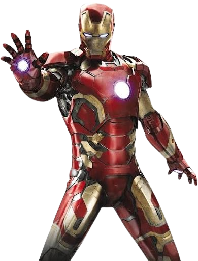
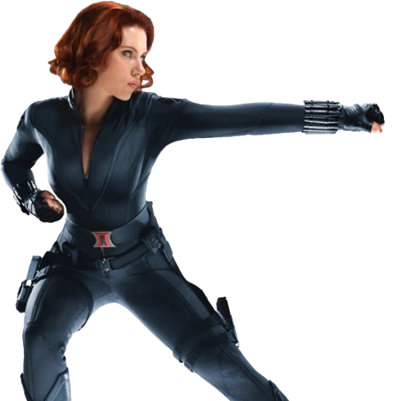
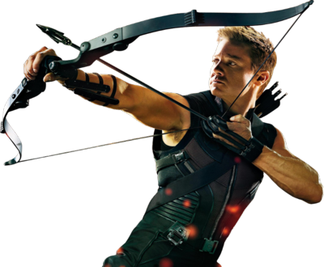
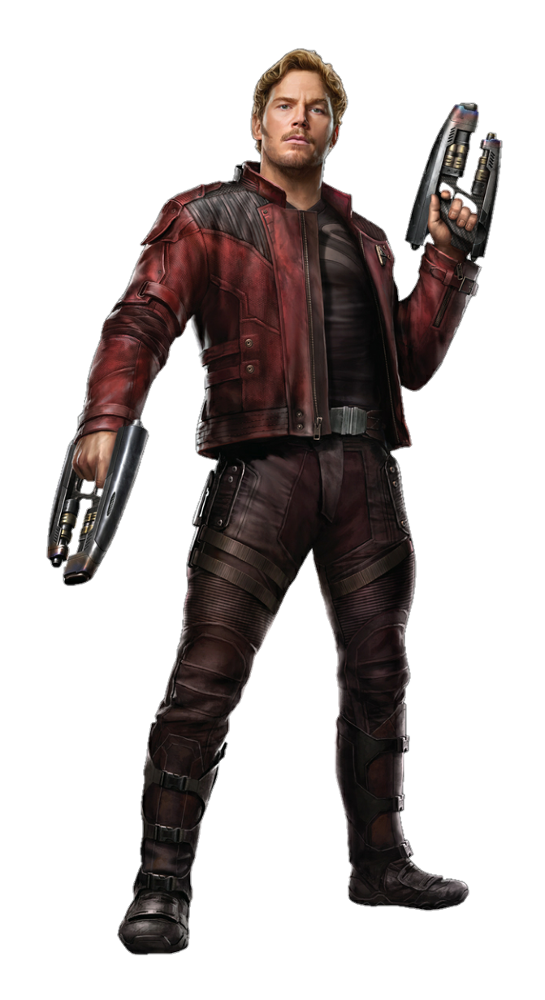
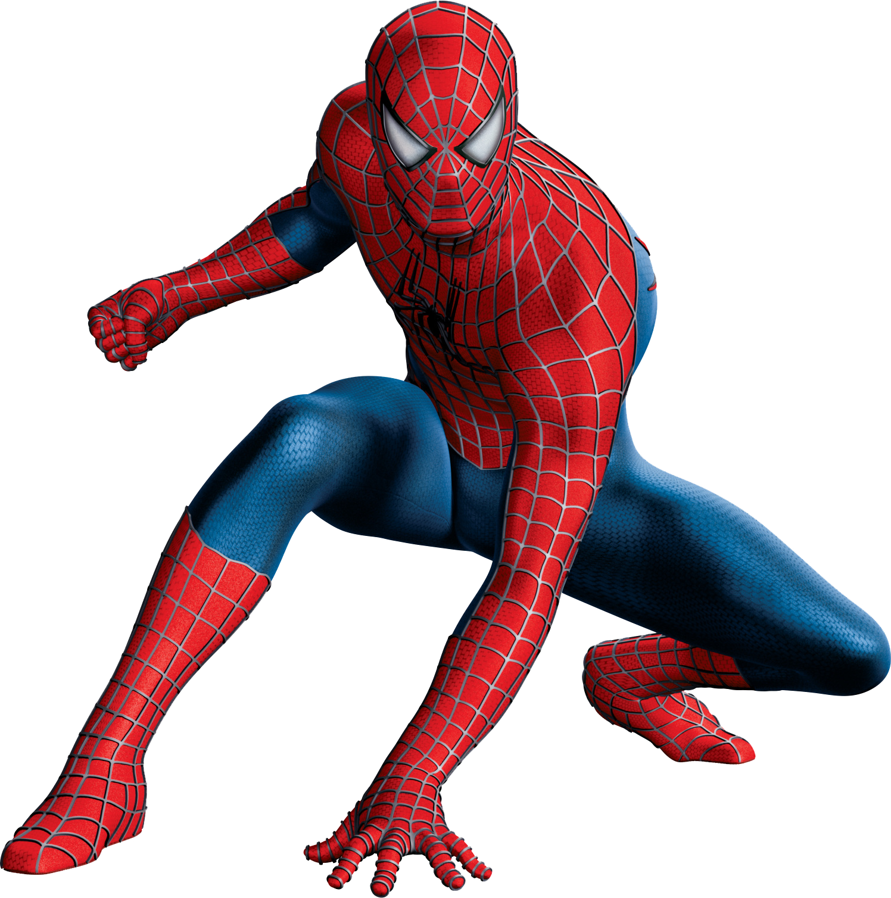

Tony Stark, magnate e ingeniero de genio incomparable, crea el traje de armadura Iron Man. Combina tecnología revolucionaria, ingenio y determinación para proteger el mundo como vengador y filantrópista.
Vengador de Marvel

Natasha Romanoff, agente especializada en espionaje y combate cuerpo a cuerpo de habilidades mortales. Entrenada en secreto, se redime a través de su lealtad a los Vengadores y su búsqueda de justicia.
Espia de los Vengadores

Clint Barton, maestro del arco y la precisión sin poderes sobrehumanos. Su puntería infalible, inteligencia táctica y determinación lo hacen miembro invaluable de los Vengadores en sus misiones más peligrosas.
Arquero estratégico

Peter Quill, líder carismático de los Guardianes de la Galaxia. Reclutado como niño por piratas espaciales, utiliza su ingenio, carisma y amor por la música para unir un equipo dispuesto a salvar galaxias.

Peter Parker, estudiante neoyorquino que adquiere poderes de araña tras una mordedura radiactiva. Con su sentido arácnido, agilidad y fuerza sobrehumana, protege a Nueva York como su amigable vecino superhéroe.